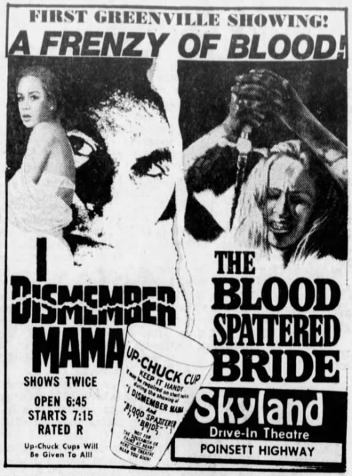

Le Cauchemar de Dracula
Le Cauchemar de Dracula [Dracula].
1958. Réalisation de Terence Fischer. Royaume-Uni. Hammer Film Productions.
Dracula et les Femmes
Dracula et les Femmes [Dracula Has Risen from the Grave].
1968. Réalisation de Freddie Francis. Royaume-Uni. Hammer Film Productions.
The Vampire Lovers
The Vampire Lovers. 1970. Réalisation de Roy Ward Baker.
Royaume-Uni. Hammer Film Productions et American International Pictures.
Vampyres
Vampyres.
1975. Réalisation de José Ramón Larraz. Royaume-Uni. Lurco Films.
Spermula
Spermula.
1976. Réalisation de Charles Matton. France. Pathé-Natan et Cipar Films.
La Vampire Nue
La Vampire nue.
1969. Réalisation de Jean Rollin. France. Films ABC.
Requiem pour un Vampire
Requiem pour un vampire.
1972. Réalisation de Jean Rollin. France. Films ABC.
Vampyros Lesbos
Vampyros Lesbos.1971. Réalisation de Jesús Franco.
Espagne et République fédérale d’Allemagne. Fénix Films et CCC Telecine Film.
Séquence de rêve érotique.
La Mariée Sanglante
La Mariée sanglante [La novia ensangrentada].
1972. Réalisation de Vincente Aranda. Espagne. Morgana Films.

Séquence finale.
L'affiche du double programme La Mariée Sanglante et I Dismember Mama
promet la distribution gratuite de gobelets vomitoires en guise de précaution.
La bande annonce du double programme met en scène un tueur en série
qui se serait déchaîné dans la salle après avoir assisté à la projection.
La Résidence
La Résidence [La Residencia].
1969. Réalisation de Narciso Ibáñez Serrador. Espagne. Anabel Films.
Séquence du rituel sexuel.
Les Lèvres Rouges
Les Lèvres rouges.1971. Réalisation de Harry Kümel.
Belgique, France et République fédérale d’Allemagne.
Showking Films, Maya Films, Ciné Vog Films et Roxy Film.
The Velvet Vampire
The Velvet Vampire.
1971. Réalisation de Stephanie Rothman. États-Unis. New World Pictures.